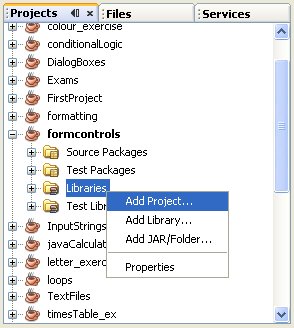
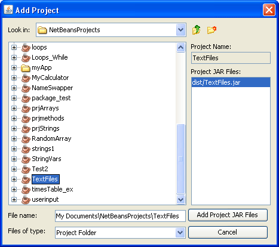
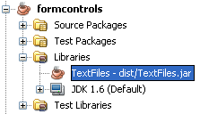
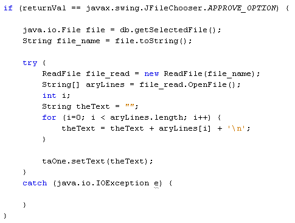

Actually, you have already written code to open a file. The process is no different for the open file dialogue box. And because you have already written the classes that open and write to a file, you can just import them into the current project.
To import a class that you have already written, have a look at the Properties window on the left of NetBeans. (If you can't see the properties window, click the Window menu item at the top of NetBeans. From the Window menu, select Properties.)
Expand the entry for your current project, and right-click the Libraries item:

From the menu that appears, select Add Project. When you do, you'll see the following dialogue box:

Make sure that the Look in box at the top says "NetBeans Projects". Now scroll down and locate your TextFiles project. This is where your classes are that open and write to a file. Now click the "Add project JAR files" button. The dialogue box will close and you'll be returned to NetBeans. Have a look at the Libraries entry for your current project and you'll see that it has been imported:

Now that you've added the classes to your project, you can add an import line to the top of your code:
import textfiles.ReadFile;
If your recall, ReadFile was what we called the class that opened a file. The package name we came up with was called textfiles. We're now importing the ReadFile class, and can now create new objects from it.
ReadFile file_read = new ReadFile( file_name );
Adapt your IF Statement to add the following try …catch code:

The code is just about the same as when we opened a text file previously: get the name of the file and create a new ReadFile object, call the openFile method we created, and return all the lines as an array, then loop round reading each line. Notice that we place all the lines in the text area control on our form.
Exercise
One thing missing, however, is a message in the catch part of the
try … catch block. Move your message box between the curly brackets
of catch. In between the round brackets of showMessageDialog add a suitable
message. Or you can simply use e.getMessage.
When you've completed the code, try it out. You should be to open a file using
your File > Open menu. The text file should then appear in your text area
field.